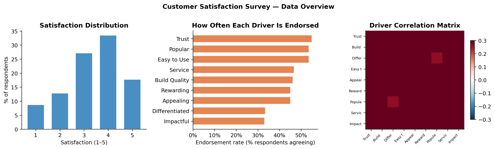
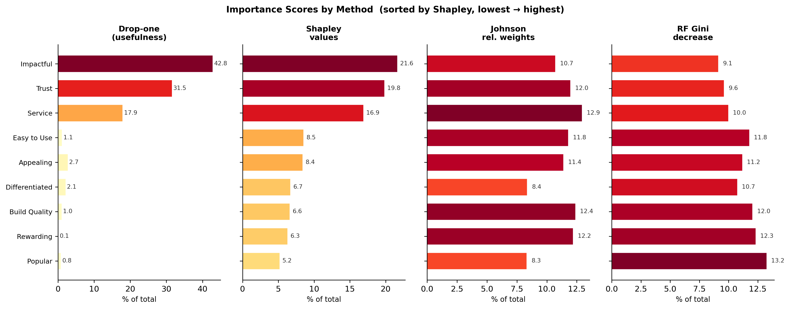
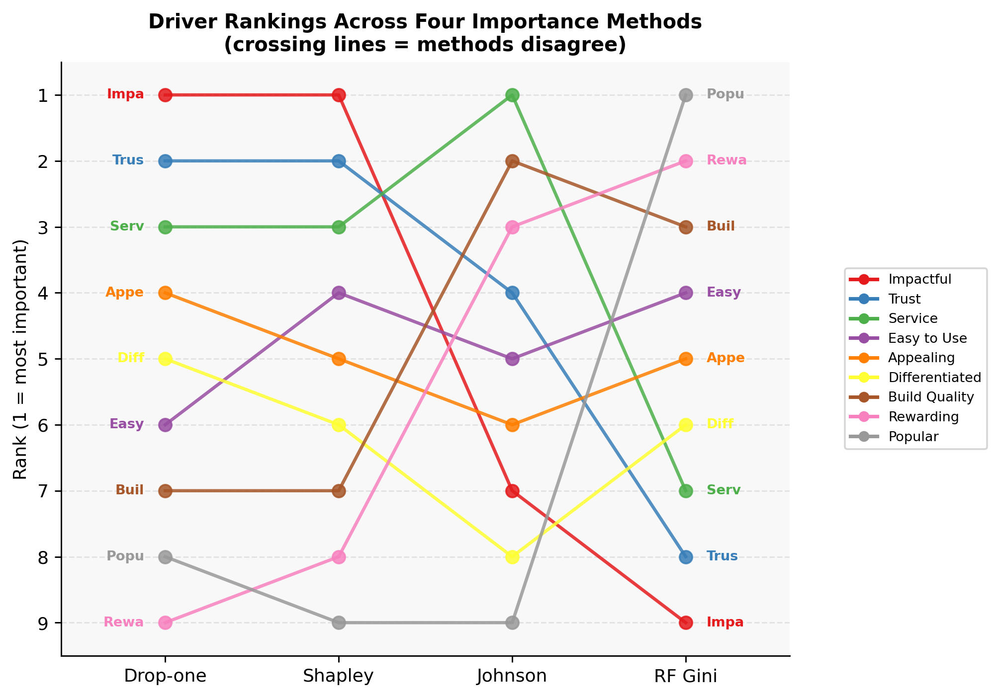
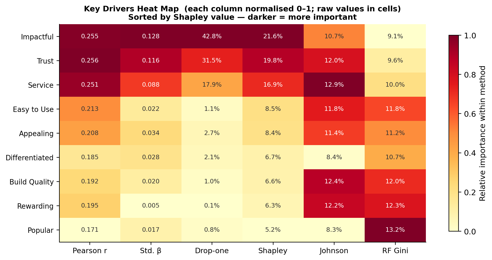

print(f"Respondents: {n:,} | Brands: {df['brand'].nunique()} | Satisfaction mean: {y.mean():.2f} SD: {y.std():.2f}")Respondents: 2,553 | Brands: 10 | Satisfaction mean: 3.39 SD: 1.17Six Methods for Identifying What Actually Moves Customer Satisfaction
Zejun Jiang
June 6, 2026
A brand manager wants to improve customer satisfaction. She has survey data on nine product attributes — trust, build quality, ease of use, and six more — along with an overall satisfaction rating from each respondent. The obvious first step is to ask: which of these attributes actually drive satisfaction?
This is harder than it sounds. When attributes are positively correlated with each other (customers who trust a brand tend to find it appealing too), a simple ranking by correlation gives a distorted picture. Regression can help but produces coefficients that are sensitive to multicollinearity. The research community has converged on a toolkit of key driver analysis methods, each making different trade-offs between simplicity, interpretability, and statistical rigor.
This post applies six methods to the same dataset and compares what each tells us:
| Method | Core question answered |
|---|---|
| Pearson correlation | How strongly does this driver correlate with satisfaction? |
| Standardised β | How much does satisfaction change per SD of this driver, holding others fixed? |
| Drop-one (usefulness) | How much does R² fall if we remove this driver entirely? |
| Shapley values | What is each driver’s fair share of R², averaging over all entry orders? |
| Johnson’s relative weights | What share of R² does each driver explain via orthogonal rotation? |
| Random forest Gini decrease | How much does this driver reduce prediction error in an ensemble of trees? |
A key question motivating the comparison: do all six methods tell the same story, or do they diverge — and if so, why?
Respondents: 2,553 | Brands: 10 | Satisfaction mean: 3.39 SD: 1.17
Three things stand out from this initial look. First, satisfaction is left-skewed — most respondents rate 3–5, with relatively few giving 1–2, a typical pattern in brand-satisfaction surveys. Second, endorsement rates vary considerably across drivers: Trust and Service are frequently endorsed (≈ 47%), while Build Quality is the least endorsed (≈ 37%). Third, and most important for the analysis that follows: the nine drivers are all positively correlated with each other (the correlation matrix is orange everywhere, no blue). This means every driver that correlates with satisfaction also correlates with every other driver. Any method that does not correct for this overlap will double-count shared variance — and different methods handle the overlap differently, which is exactly why they disagree.
The starting point: how strongly does each driver correlate with satisfaction?
Pearson correlation is easy to compute and explain, but it ignores that drivers share variance. Because all nine attributes are positively correlated (as we just saw), each attribute’s correlation with satisfaction is partly explained by its co-movement with other important attributes.
Running a multiple regression with all nine drivers simultaneously controls for overlap. The standardised beta tells us how many SD satisfaction moves per SD of each driver, holding the other eight fixed.
Full-model R² = 0.1090 (explains 10.9% of satisfaction variance)The model collectively explains about 11% of satisfaction variance — modest but not unusual for a brand attribute survey. The low R² is itself informative: it suggests that the nine measured attributes do not fully capture what drives satisfaction; unobserved factors (word-of-mouth, pricing, competitor alternatives) account for most of the variance.
For each driver, we measure how much R² drops when that driver is removed from the full model.
Drop-one is the most conservative importance measure: it credits a driver only for variance it contributes uniquely, beyond what all other drivers already explain. A driver that is redundant with others will score near zero even if it correlates substantially with satisfaction.
Shapley values originate in cooperative game theory. The “game” is predicting satisfaction; the “players” are the nine drivers; the “payoff” is R². Shapley values divide R² fairly — each driver receives the average of its marginal contribution across every possible order in which drivers could enter the model.
\[ \phi_j = \sum_{S \subseteq P \setminus \{j\}} \frac{|S|!\,(p-|S|-1)!}{p!}\,\bigl[R^2(S \cup \{j\}) - R^2(S)\bigr] \]
With \(p = 9\) drivers there are \(2^9 = 512\) subsets to evaluate — small enough to compute exactly by brute force.
# Cache R² for every subset (512 regressions)
r2_cache = {}
for k in range(p + 1):
for S in combinations(range(p), k):
if k == 0:
r2_cache[S] = 0.0
else:
r2_cache[S] = LinearRegression().fit(X[:, list(S)], y).score(
X[:, list(S)], y)
# Shapley value for each driver
shapley_raw = {}
for j, pr in enumerate(PREDICTORS):
others = [i for i in range(p) if i != j]
sv = 0.0
for k in range(p):
for S in combinations(others, k):
w = math.factorial(k) * math.factorial(p - k - 1) / math.factorial(p)
S_plus = tuple(sorted(S + (j,)))
sv += w * (r2_cache[S_plus] - r2_cache[S])
shapley_raw[pr] = sv
total_sv = sum(shapley_raw.values())
print(f"Shapley values sum to: {total_sv:.4f} ✓ (full-model R² = {r2_full:.4f})")
shapley_pct = {pr: v / total_sv * 100 for pr, v in shapley_raw.items()}Shapley values sum to: 0.1090 ✓ (full-model R² = 0.1090)By construction, Shapley values sum exactly to R² and treat each driver fairly: when two drivers jointly explain variance that neither explains alone, they split the credit equally.
Johnson (2000) proposed a closed-form decomposition of R². The key idea: rotate the correlated predictors into orthogonal components, see how much each component predicts satisfaction, then rotate those contributions back to the original drivers.
\[ \varepsilon_j = \sum_{k=1}^{p} P_{jk}^2 \cdot r_k^2 \qquad \text{where } r_k = \operatorname{Cor}(Z_k,\, y) \]
R_xx = np.corrcoef(Xs.T)
eigvals, eigvecs = np.linalg.eigh(R_xx)
Z = Xs @ eigvecs @ np.diag(eigvals**(-0.5)) # orthogonal components
r2_comp = np.array([np.corrcoef(Z[:, k], ys)[0, 1]**2 for k in range(p)])
johnson_raw = {pr: float((eigvecs[i]**2) @ r2_comp)
for i, pr in enumerate(PREDICTORS)}
print(f"Johnson weights sum to: {sum(johnson_raw.values()):.4f} ✓ (R² = {r2_full:.4f})")
johnson_pct = {pr: v / sum(johnson_raw.values()) * 100
for pr, v in johnson_raw.items()}Johnson weights sum to: 0.1090 ✓ (R² = 0.1090)The first five methods assume a linear relationship. A random forest makes no linearity assumption: it grows an ensemble of decision trees, and each variable’s importance is the total reduction in Gini impurity when that variable is used as a split criterion, averaged across all trees.
The forest can capture non-linear effects and interactions invisible to regression. It also tends toward more uniform importance when variables are substitutable in tree splits.
| Key Drivers of Customer Satisfaction | ||||||
| n = 2,553 respondents across 10 brands · full-model R² = 0.109 · sorted by Shapley value | ||||||
| Driver | Correlation / Regression | R² Decomposition (% of total R²) | Non-linear | |||
|---|---|---|---|---|---|---|
| Pearson r | Std. β | Drop-one | Shapley | Johnson | RF Gini | |
| Impactful | 0.255 | 0.128 | 42.8% | 21.6% | 10.7% | 9.1% |
| Trust | 0.256 | 0.116 | 31.5% | 19.8% | 12.0% | 9.6% |
| Service | 0.251 | 0.088 | 17.9% | 16.9% | 12.9% | 10.0% |
| Easy to Use | 0.213 | 0.022 | 1.1% | 8.5% | 11.8% | 11.8% |
| Appealing | 0.208 | 0.034 | 2.7% | 8.4% | 11.4% | 11.2% |
| Differentiated | 0.185 | 0.028 | 2.1% | 6.7% | 8.4% | 10.7% |
| Build Quality | 0.192 | 0.020 | 1.0% | 6.6% | 12.4% | 12.0% |
| Rewarding | 0.195 | 0.005 | 0.1% | 6.3% | 12.2% | 12.3% |
| Popular | 0.171 | 0.017 | 0.8% | 5.2% | 8.3% | 13.2% |

A bump chart traces each driver’s rank across the four importance methods. Stable horizontal lines mean the methods agree; crossing lines reveal disagreement.


All six methods agree on the top three drivers: Impactful, Trust, and Service are the primary levers for customer satisfaction. This agreement across very different estimation methods is meaningful — it is unlikely to be an artefact of any single method’s assumptions.
The ranking within the top three does depend on the method. Shapley and drop-one both put Impactful first and Trust second; Pearson correlation reverses them slightly; the RF Gini places Service above both. The business-level implication is the same regardless: if the brand manager has resources to invest in one or two attributes, Impactful and Trust are the clear priority.
The bump chart shows the most disagreement for the middle-tier drivers (Easy, Appealing, Differentiated, Build Quality, Rewarding). The drop-one method assigns these almost no importance (together sharing < 8% of total), while Shapley gives them 6–9% each.
The explanation is rooted in the correlation matrix: all nine attributes are positively correlated with each other. This means each middle-tier attribute’s predictive information is largely redundant with information already provided by the top-tier attributes. Drop-one — which measures only unique contribution — credits them almost nothing. Shapley — which averages over all entry orders, including many where the middle-tier attributes enter before the top-tier ones — gives them credit for their marginal contribution in those orderings.
Neither answer is “wrong”: they answer different questions. Drop-one asks “what does this driver add beyond everything else?” Shapley asks “on average, what share of the outcome does this driver explain?”
What caught me off-guard is how similar all nine drivers look under Johnson’s relative weights and the RF Gini (ranging only 8–13%). Given that drop-one shows Impact at 43% and Rewarding at 0.1%, I expected more differentiation.
For Johnson: the orthogonal rotation smears variance across all nine components, and the final rotation back produces near-uniform weights — a mathematical consequence of high pairwise correlations in the predictor matrix.
For the random forest: decision trees can achieve the same split quality using any one of several correlated attributes. If “Impact” is unavailable, the forest simply switches to “Trust,” so the marginal importance of any single attribute is modest. This suggests the forest has effectively discovered the same high-collinearity structure that makes regression betas unstable.
| Stakeholder need | Method to report |
|---|---|
| Executive dashboard (“quick ranking”) | Pearson r or Shapley % |
| Budget allocation (“what’s unique?”) | Drop-one |
| Fair attribution (“what does each driver contribute?”) | Shapley values |
| Robustness check | Compare Shapley vs. Pearson r — large gaps flag collinearity |
| Testing non-linear effects | RF Gini |
For this brand satisfaction study, the practical advice is: focus investment on Impactful and Trust first, then Service — this recommendation survives across every method. The remaining six attributes can be treated as a secondary tier where any improvement is helpful but unlikely to move the satisfaction needle substantially.
The analysis pools respondents across 10 brands, which may mask important heterogeneity — the key drivers for a premium brand are likely different from those of a discount brand. A natural extension would be to run brand-specific analyses or a hierarchical model. Additionally, with R² ≈ 0.11, the nine measured attributes explain only a fraction of satisfaction variance, suggesting important unobserved factors (price, word-of-mouth, competitive alternatives) that no key driver analysis on these items alone can capture.